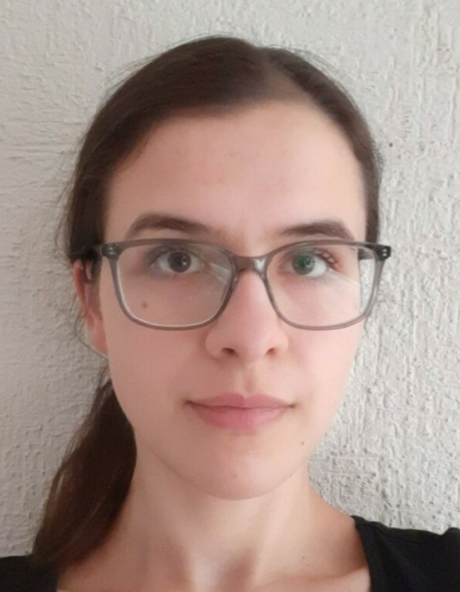

Mi nombre es Eva Roggenhofer, soy de Alemania. Recién llegué a Querétaro por mi semestre de intercambio. Normalmente vivo en Núremberg. Con respecto a la construcción de software tengo conocimientos básicos de los lenguajes python, php, html y css. Tengo experiencia en gestión de proyectos de implementación de software. En mi tiempo libre hago deporte (natación, correr) y veo series o películas. Me gustan los idiomas y explorar nuevos países (como México). En este curso me gustaría profundizar mis conocimientos básicos que ya tengo en el área de construcción de software. Espero que pueda contribuir a un trabajo en equipo armonioso y productivo.
